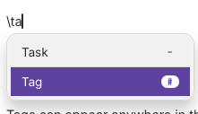
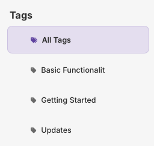

Tags
Tags are labels for grouping notes by topic, project, person, or any other way you want to find them. They are like folders - except that a note can have multiple tags.
Adding a tag
Write a tag on its own line anywhere in the note body. The first non-space character must be "#". Everything after the "#", with surrounding whitespace removed, becomes the tag name. For example:
#work
As you start typing a tag an suggestion list of existing tags will display allowing you yo select an existing tag without typing it out fully.
Alternatively press ‘\’ to open the insert menu and select the Tag option.

Adding more than one tag
Tags can appear anywhere in the body, before or after the rest of your note. They are recognised when the note is saved. Use one tag per line:
#work
#urgent
#client-acme
A "#" in the middle of a sentence is not a tag. A line containing only "#" is ignored.
Tag names are kept as written, so "#Work" and "#work" are different tags. Repeating the same tag in a note does not create duplicate entries.
Find notes with a tag
After saving, the tag appears in the Tags section in the left panel. Select it to show the notes that carry that tag. Select *All Tags* to show every note.

A selected tag also filters the Tasks, Done, and Decisions views.
Change or remove a tag
Edit or delete the tag line in the note, then save. The tag list and the notes that belong to it update from the saved note content. When no notes use a tag, it no longer appears in the Tags section.
#Basic Functionality